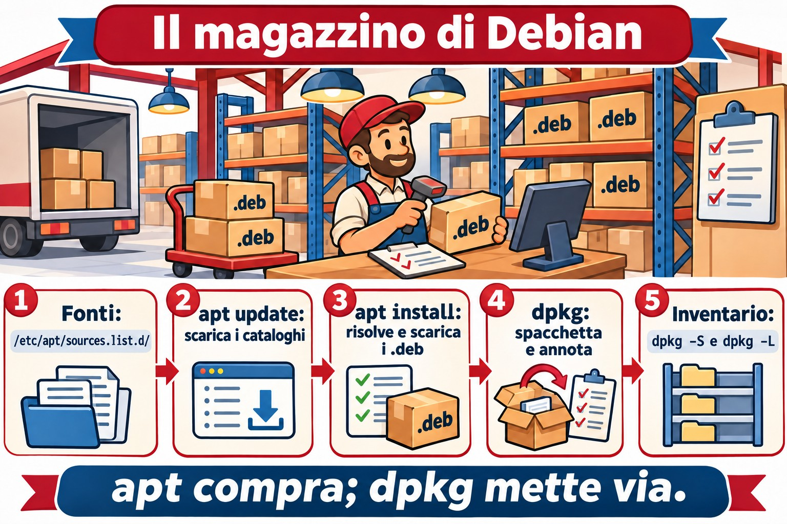
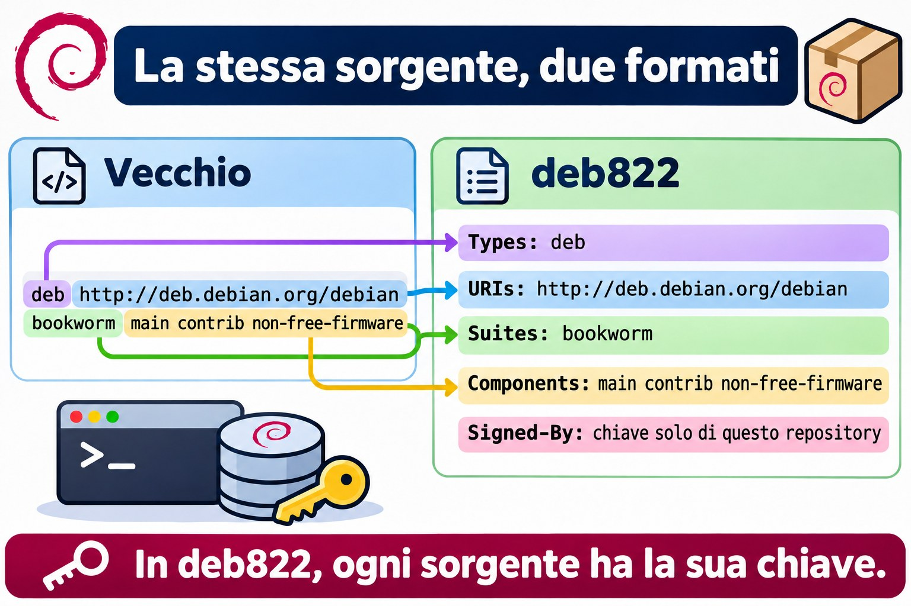
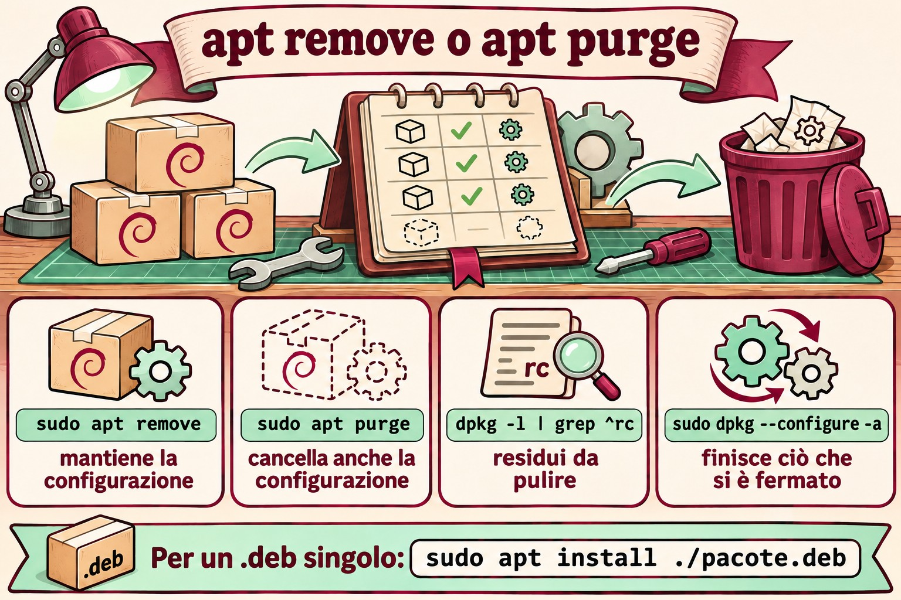

Lezione 6.1 · Pacchetti su Debian
Finora hai installato programmi con un apt install qua e uno là, senza pensarci troppo. Oggi guardi dentro. Cos'è un pacchetto, chi lo spacchetta, chi lo scarica da internet e risolve le dipendenze, cosa resta sul disco quando rimuovi, e come scoprire da quale pacchetto arriva un file qualsiasi. Leggi anche le sorgenti da cui apt scarica tutto, nel formato nuovo, il deb822. Questa è la prima di cinque lezioni sul software. La prossima fa lo stesso su Rocky, e vedrai che l'idea è la stessa, solo con nomi diversi.
Il cuore di questa lezione:
apt update,apt install,apt remove,apt purgeeapt autoremove;apt searcheapt show;dpkg -l,dpkg -L pacoteedpkg -S arquivo; la differenza tradpkg(installa il file.deb) eapt(cerca, risolve le dipendenze e chiamadpkg); e dove stanno le sorgenti:/etc/apt/sources.list.d/. Il resto è approfondimento.
| Scheda | Lezione 6.1 |
|---|---|
| Modulo | M6 · Software, lezione 1 di 5 |
| Quando | Settimana 10 |
| Alla fine sei in grado di | Spiegare cosa c'è dentro un .deb e chi fa cosa tra dpkg e apt; aggiornare gli indici, cercare, vedere i dettagli, installare, rimuovere e fare il purge; leggere lo stato di un pacchetto in dpkg -l (ii, rc, iU); elencare i file di un pacchetto e trovare il pacchetto di un file, installato o no; capire pacchetti manuali e automatici e autoremove; leggere e scrivere una sorgente nel formato deb822; installare un .deb isolato e riparare le dipendenze mancanti |
| Prerequisiti | Lezione 3.3 (grep); Lezione 4.2 (systemd); internet sulla debian-lab |
| Durata | Circa 2h30 |
| Snapshot | m6a1-inicio e m6a1-fim sulla debian-lab. La rocky-lab oggi riposa |
1 · Riscaldamento
Tre domande, a memoria. Scrivi le risposte; le soluzioni le controllano alla fine.
- Esegui
apt removesu un pacchetto. Secondo te, il suo file di configurazione, in/etc, se ne va insieme? - Qualcuno ti manda un file
programa.deb, e tu eseguisudo dpkg -i programa.deb. Secondo te, se manca una libreria,dpkgla scarica? - Trovi un file strano in
/usr/bin. Secondo te, si può sapere da quale pacchetto arriva, con un solo comando?
2 · Perché conta
| La richiesta | La risposta sbagliata | Cosa provoca |
|---|---|---|
| "Rimuovi Apache e installa Nginx" | apt remove apache2 e basta | La vecchia configurazione resta in /etc/apache2, e le dipendenze arrivate con lui restano installate. Mesi dopo, nessuno sa se sono spazzatura o se qualcosa le usa |
"apt dice unmet dependencies e non installa più niente" | Cancellare file in /var/lib/dpkg o forzare con --force-all | Il database dei pacchetti diventa incoerente, e il prossimo aggiornamento può rompere il sistema. Quasi sempre, apt --fix-broken install risolve |
"Di cosa è questo file in /usr/local/bin?" | Cancellarlo per vedere cosa succede | dpkg -S dice subito se un pacchetto è proprietario del file. Se nessuno lo è, qualcuno l'ha installato a mano, e già questa è un'informazione |
| "Aggiungi questo repository di Ubuntu che ho trovato su un blog" | Incollare la riga in sources.list | Pacchetti di un'altra distro, o di un'altra versione, mescolati ai tuoi. Funziona fino al prossimo aggiornamento, e poi le dipendenze litigano |
3 · Modello mentale
Pensa a un magazzino. Un pacchetto
.debè una scatola sigillata: dentro ci sono i file, un'etichetta con nome, versione e dipendenze ("per funzionare, serve la scatola X"), e le istruzioni per prima e dopo l'apertura (gli script).dpkgè il magazziniere: riceve una scatola, mette ogni cosa al suo posto, annota tutto nell'inventario (/var/lib/dpkg/) e sa dire da quale scatola viene ogni oggetto. Non esce a comprare niente: se la scatola ne chiede un'altra che non è in magazzino, protesta e si ferma.aptè l'addetto agli acquisti: legge i cataloghi dei fornitori (i repository elencati nelle sorgenti), scopre tutte le scatole necessarie, le scarica e le consegna al magazziniere nell'ordine giusto.apt updateaggiorna solo i cataloghi: non compra niente.
/etc/apt/sources.list.d/*.sources (os fornecedores)
│
│ apt update: baixa os catálogos
▼
/var/lib/apt/lists/ (os catálogos: quem tem o quê, em que versão)
│
│ apt install X: resolve dependências e baixa
▼
/var/cache/apt/archives/*.deb (as caixas baixadas)
│
│ o apt chama o dpkg
▼
dpkg: desempacota, roda os scripts e anota em /var/lib/dpkg/status

4 · L'essenziale
apt, l'uso di tutti i giorni
| Comando | Fa |
|---|---|
sudo apt update | Scarica i cataloghi nuovi. Eseguilo prima di installare o aggiornare |
apt search palavra / apt show pacote | Cerca nei cataloghi / mostra versione, dimensione, dipendenze e descrizione |
sudo apt install pacote | Installa con le dipendenze |
sudo apt install ./arquivo.deb | Installa un .deb isolato e cerca le dipendenze. Il ./ è obbligatorio |
sudo apt remove pacote | Rimuove i file, ma mantiene la configurazione in /etc |
sudo apt purge pacote | Rimuove tutto, configurazione compresa |
sudo apt autoremove | Rimuove le dipendenze che nessuno usa più |
sudo apt upgrade | Aggiorna il possibile senza rimuovere nulla |
sudo apt full-upgrade | Aggiorna tutto, rimuovendo pacchetti se serve |
apt list --installed / --upgradable | Elenca gli installati / quelli con aggiornamento in sospeso |
apt policy pacote | Versione installata, versione candidata e da quale repository viene ciascuna |
apt è fatto per le persone, e il suo output può cambiare tra una versione e l'altra. In uno script, usa apt-get e apt-cache, che hanno un output stabile. Per questo apt avvisa WARNING: apt does not have a stable CLI interface quando l'output va in una pipe. Impara a conoscere entrambi.
dpkg, l'inventario
| Comando | Fa |
|---|---|
dpkg -l / dpkg -l 'padrão*' | Elenca i pacchetti e lo stato di ciascuno |
dpkg -L pacote | File che un pacchetto installato ha messo sul disco |
dpkg -S /caminho/arquivo | Quale pacchetto installato è proprietario del file |
dpkg -s pacote | Stato e dettagli di un pacchetto installato |
dpkg -I arquivo.deb / dpkg -c arquivo.deb | Etichetta / contenuto di un .deb non ancora installato |
sudo dpkg -i arquivo.deb | Installa il .deb, ma non cerca le dipendenze |
sudo dpkg -r pacote / sudo dpkg -P pacote | Rimuove / fa il purge |
sudo dpkg --configure -a | Termina le installazioni interrotte |
sudo dpkg-reconfigure pacote | Rifà le domande di configurazione del pacchetto |
Le prime due lettere di dpkg -l sono lo stato. La prima è ciò che è stato richiesto, e la seconda è ciò che c'è:
| Codice | Significa |
|---|---|
ii | Richiesto di installare, è installato. Il caso normale |
rc | È stato rimosso, ma la configurazione è rimasta. Sparisce con purge |
iU | Spacchettato, ma non configurato: manca una dipendenza o l'installazione è stata interrotta |
hi | Installato e bloccato (hold): non viene aggiornato |
Configurazione e purge
I file di configurazione che il pacchetto dichiara (i conffiles, quasi sempre in /etc) hanno un trattamento speciale. Con un remove, restano sul disco, perché tu non perda ciò che hai regolato. In un aggiornamento, se hai modificato il file e lo ha fatto anche il pacchetto, dpkg ti chiede cosa fare. Puoi tenere il tuo, accettare il nuovo o vedere la differenza. L'elenco dei conffiles di un pacchetto si ottiene con dpkg-query -W -f='${Conffiles}\n' pacote.
Manuale e automatico
apt ricorda perché ogni pacchetto è installato. Se l'hai chiesto tu, è manuale. Se è arrivato come dipendenza, è automatico. Quando nessun pacchetto manuale ha più bisogno di uno automatico, apt autoremove se lo porta via.
| Comando | Fa |
|---|---|
apt-mark showmanual / showauto | Elenca i manuali / gli automatici |
sudo apt-mark manual pacote | Segna come manuale: autoremove non lo porta più via |
sudo apt-mark hold pacote / unhold | Blocca / sblocca la versione |
apt-cache depends pacote / rdepends pacote | Da cosa dipende / chi dipende da lui |
Trovare il pacchetto di un file
dpkg -S conosce solo i pacchetti installati. Per cercare in tutti i pacchetti del repository, usa apt-file, che ha un catalogo suo: sudo apt install apt-file, sudo apt-file update e apt-file search bin/dig.
Le sorgenti, nel formato deb822
Le sorgenti dicono ad apt da dove scaricare. Ci sono due formati, e li incontrerai entrambi:
# Formato antigo, uma linha por fonte (/etc/apt/sources.list)
deb http://deb.debian.org/debian bookworm main contrib non-free-firmware
# Formato deb822 (/etc/apt/sources.list.d/debian.sources)
Types: deb
URIs: http://deb.debian.org/debian
Suites: bookworm bookworm-updates
Components: main contrib non-free-firmware
Signed-By: /usr/share/keyrings/debian-archive-keyring.gpg| Campo | Cos'è |
|---|---|
Types | deb per i pacchetti pronti; deb-src per il codice sorgente |
URIs | L'indirizzo del mirror |
Suites | La versione tramite il nome in codice: bookworm è Debian 12 e trixie è la 13. Più gli aggiornamenti, come bookworm-updates e bookworm-security |
Components | main (libero), contrib, non-free e non-free-firmware |
Signed-By | La chiave GPG che firma quel repository, e solo quello |
Ogni sorgente in un file .sources in /etc/apt/sources.list.d/, con la sua chiave nel Signed-By, è il modo moderno. Il vecchio apt-key è obsoleto, perché si fidava di qualsiasi chiave per qualsiasi repository. Il formato dipende dalla versione e da come è stata installata la macchina. Una Debian 12 di solito arriva con il sources.list di una riga. Su Debian 13, apt modernize-sources converte in deb822.


Rocky × Debian
La prossima lezione è su Rocky, ma conviene vedere subito la mappa:
| Compito | Debian | Rocky |
|---|---|---|
| Magazziniere (file locale) | dpkg | rpm |
| Addetto agli acquisti (repository e dipendenze) | apt | dnf |
| File di un pacchetto | dpkg -L | rpm -ql |
| Proprietario di un file | dpkg -S | rpm -qf |
| Pacchetto di un file non installato | apt-file search | dnf provides |
| Rimuovere anche la configurazione | purge | Non esiste; rpm conserva copie .rpmsave |
| Sorgenti | /etc/apt/sources.list.d/*.sources | /etc/yum.repos.d/*.repo |
5 · Lab guidato
Tutto sulla debian-lab (202). La rocky-lab oggi riposa. Ti servirà internet nella VM.
Passo 0 · Snapshot e cartella. In Proxmox:
qm snapshot 202 m6a1-inicioNella VM:
mkdir -p ~/lab61 && cd ~/lab61Passo 1 · Da dove arrivano i pacchetti.
ls -l /etc/apt/sources.list /etc/apt/sources.list.d/
cat /etc/apt/sources.list.d/*.sourcesRisultato atteso: su Debian 13 vedi un debian.sources nel formato deb822 (Types / URIs / Suites / Components / Signed-By). Il sources.list può non esistere, o essere vuoto. Annota quali Suites compaiono (per esempio trixie, trixie-updates, trixie-security).
Passo 2 · Aggiornare il catalogo.
sudo apt update
ls /var/lib/apt/lists/ | head
apt list --upgradableapt update non installa niente. Scarica solo i cataloghi in /var/lib/apt/lists/. A aggiornare i pacchetti è apt upgrade; oggi non eseguire quello.
Passo 3 · Cercare prima di installare.
apt search --names-only '^tree$'
apt show tree
apt policy treeapt policy mostra la versione installata, la candidata e da quale repository verrebbe. È il comando che risponde a "perché vuole installare questa versione?".
Passo 4 · Installare e indagare.
sudo apt install -y tree
dpkg -l tree
dpkg -L tree
dpkg -S $(command -v tree)
dpkg -s tree | grep -E '^(Status|Version)'Risultato atteso: ii in dpkg -l, l'elenco dei file con -L, e tree: /usr/bin/tree con -S.
Passo 5 · Un pacchetto con configurazione: nginx.
sudo apt install -y nginx
dpkg -S /etc/nginx/nginx.conf
dpkg -l 'nginx*'
systemctl is-active nginxNota: nginx.conf appartiene a nginx-common, non a nginx. I pacchetti grandi di solito si dividono così (il binario da una parte, la configurazione e i file comuni dall'altra).
Passo 6 · remove × purge, dal vivo.
sudo apt remove -y nginx nginx-common
dpkg -l 'nginx*' | grep -E '^(ii|rc)'
ls /etc/nginx/Risultato atteso: nginx-common compare come rc (rimosso, configurazione rimasta), e /etc/nginx/ è ancora lì. Ora:
sudo apt purge -y nginx-common
ls /etc/nginx/ 2>&1
sudo apt autoremove -yDopo il purge, /etc/nginx/ sparisce e l'rc scompare dall'elenco. autoremove porta via le dipendenze che erano lì solo per colpa di nginx, se ce n'è qualcuna.
Passo 7 · Un .deb a mano, senza dipendenze.
apt download nginx
ls -l *.deb
dpkg -I nginx_*.deb | grep -E '^ (Package|Version|Depends)'
dpkg -c nginx_*.deb | head
sudo dpkg -i nginx_*.debRisultato atteso: dpkg -i si lamenta che manca nginx-common (gli hai fatto il purge al passo 6). Il pacchetto resta installato a metà:
dpkg -l nginx | tail -1
sudo apt install -y treedpkg -l mostra iU (unpacked, non configurato). E apt si rifiuta di fare qualsiasi altra cosa e ti manda a eseguire --fix-broken. È quello che fai:
sudo apt --fix-broken install -y
dpkg -l nginx nginx-common | tail -2Ora entrambi sono ii. Morale: un .deb isolato si installa con sudo apt install ./arquivo.deb (con il ./), che risolve già le dipendenze. dpkg -i non cerca niente.
Passo 8 · Manuale, automatico e hold.
apt-mark showmanual | grep -E '^(tree|nginx)'
apt-mark showauto | grep nginx
sudo apt-mark hold nginx
apt-mark showhold
sudo apt-mark unhold nginxnginx-common compare come auto: è entrato come dipendenza. Se un giorno nginx se ne va, autoremove si porta via anche nginx-common.
Passo 9 · La cronologia.
grep -E ' (install|remove|purge) ' /var/log/dpkg.log | tail
tail -n 30 /var/log/apt/history.loghistory.log dice chi ha chiesto cosa (la riga Commandline: e il Requested-By:). dpkg.log dice cosa è cambiato davvero, pacchetto per pacchetto. In una richiesta del tipo "chi ha toccato questo server ieri?", parti da qui.
Passo 10 · (facoltativo) apt-file.
sudo apt install -y apt-file && sudo apt-file update
apt-file search bin/digdpkg -S cerca solo ciò che è già installato. apt-file cerca in tutto il repository: "quale pacchetto mi dà il comando dig?" (risposta: bind9-dnsutils).
Pulizia:
sudo apt purge -y nginx nginx-common tree
sudo apt autoremove -y
cd ~ && rm -r ~/lab61Decidi 1 · Il nginx.conf è tutto sbagliato
Qualcuno ha modificato /etc/nginx/nginx.conf fino a non lasciare nulla di utilizzabile. Vuoi il file originale del pacchetto. Scegli un'opzione prima di continuare.
- A)
sudo apt remove nginx nginx-common && sudo apt install nginx - B)
sudo apt purge nginx nginx-common && sudo apt install nginx - C)
sudo apt install --reinstall nginx-common
| Se hai scelto | Risultato | Perché |
|---|---|---|
| A | Il file rotto è ancora lì | Il remove lascia i conffiles. Nella reinstallazione, dpkg vede che il file è stato modificato da te e non lo sovrascrive |
| B | File originale ripristinato | Il purge cancella i conffiles. La nuova installazione trova il posto vuoto e ci mette l'originale |
| C | Il file rotto è ancora lì | dpkg rispetta un conffile modificato, anche in una reinstallazione |
Da ricordare: dpkg protegge la tua configurazione di proposito. Per riavere l'originale, o fai il purge, oppure cancelli il file e reinstalli forzando (vedi la sezione 6). Prima di entrambe, fai una copia: sudo cp -a /etc/nginx /root/nginx.bak.
Decidi 2 · Il fornitore ha mandato un .deb
Hai ricevuto agente_2.1_amd64.deb. sudo dpkg -i è fallito con dependency problems. Scegli un'opzione prima di continuare.
- A)
sudo dpkg -i --force-depends agente_2.1_amd64.deb - B)
sudo apt --fix-broken install - C) Modificare
/var/lib/dpkg/statuse togliere la rigaDepends:del pacchetto
| Se hai scelto | Risultato | Perché |
|---|---|---|
| A | Si installa, ma rotto | Il pacchetto resta senza la libreria di cui ha bisogno. Fallirà dopo, lontano da te, e apt continuerà a lamentarsi |
| B | Dipendenze installate, pacchetto configurato | apt cerca nel repository quello che manca e completa la configurazione che dpkg aveva lasciato a metà |
| C | Database di dpkg corrotto | Quel file è il database del sistema. Modificarlo a mano è la strada più breve per un server che nessuno riesce ad aggiornare |
Da ricordare: la prossima volta, sudo apt install ./agente_2.1_amd64.deb fin dall'inizio. Se la dipendenza non esiste in nessuno dei tuoi repository, il problema è del fornitore, non del tuo server.
6 · Rompi e ripara
Guasto 1 · "Could not get lock". Apri due sessioni SSH sulla debian-lab.


Nella sessione 1:
sudo apt install nginxFermati al Do you want to continue? [Y/n]. Non rispondere. Nella sessione 2:
sudo apt install treeSintomo: Could not get lock /var/lib/dpkg/lock-frontend. It is held by process NNNN (apt).
Diagnosi: l'errore stesso dice il PID. Controlla chi è:
ps -fp NNNNRiparazione: torna alla sessione 1 e rispondi n (oppure termina l'installazione). La sessione 2 torna a funzionare.
Nella vita reale: quasi sempre è unattended-upgrades in esecuzione, o un altro admin. Mai cancellare il file di lock: lasci due processi a lavorare sullo stesso database. Aspetta, oppure scopri il processo e parla con chi l'ha lanciato.
Guasto 2 · Conffile cancellato. Installa nginx e cancella il file principale:
sudo apt install -y nginx
sudo rm /etc/nginx/nginx.conf
sudo nginx -tSintomo: nginx -t fallisce, perché non trova la configurazione.
Prova la riparazione ovvia:
sudo apt install --reinstall -y nginx-common
ls -l /etc/nginx/nginx.confIl file non torna. dpkg capisce che l'hai cancellato di proposito e lo rispetta.
Riparazione:
sudo apt install --reinstall -y -o Dpkg::Options::=--force-confmiss nginx-common
sudo nginx -tOra il file torna e il test passa. --force-confmiss dice "conffile scomparso, rimettilo a posto".
Guasto 3 · "dpkg was interrupted". Questo non devi provocarlo, ma lo vedrai nella vita reale: un calo di corrente o un SSH caduto nel mezzo di un apt upgrade. apt ferma tutto con:
E: dpkg was interrupted, you must manually run 'sudo dpkg --configure -a' to correct the problem.
Riparazione, in quest'ordine:
sudo dpkg --configure -a
sudo apt --fix-broken install
sudo apt update && sudo apt upgradePer questo un aggiornamento lungo su un server si esegue dentro tmux (Lezione 3.x): se l'SSH cade, il processo continua.
Pulizia: sudo apt purge -y nginx nginx-common && sudo apt autoremove -y
7 · Trappole
| Trappola | Cosa succede | Come evitarla |
|---|---|---|
apt remove credendo di aver pulito tutto | La vecchia configurazione torna alla prossima installazione e non capisci il comportamento | Per ricominciare da zero, purge. Per trovare i resti: dpkg -l | grep ^rc |
dpkg -i su un .deb con dipendenze | Pacchetto iU e apt bloccato | apt install ./arquivo.deb |
apt in uno script o in cron | Avviso di "interfaccia instabile" e output che cambia tra le versioni | apt-get e apt-cache negli script |
apt upgrade senza apt update prima | Non si aggiorna niente: il catalogo è quello di ieri | Sempre update prima |
autoremove in automatico | Rimuove un pacchetto che usavi, ma che era entrato come dipendenza | Guarda l'elenco prima del y. Quello che usi davvero, apt-mark manual |
| Repository di Ubuntu o di un'altra versione su Debian | Mescolanza di librerie, dipendenze impossibili (il famoso FrankenDebian) | Solo repository della tua versione. Terzi solo con Signed-By e da fonte ufficiale |
Cancellare /var/lib/dpkg/lock* | Due processi che scrivono sul database nello stesso momento | Scoprire chi tiene il lock e aspettare |
apt-key add copiato da un vecchio tutorial | Comando obsoleto; la chiave vale per tutti i repository | Chiave in /etc/apt/keyrings/ e Signed-By: nel .sources |
hold dimenticato | Quel pacchetto resta anni senza correzioni di sicurezza | apt-mark showhold nella tua checklist mensile |
8 · Quiz
Rispondi senza guardare. Le soluzioni sono alla fine della lezione.
- In
dpkg -l, qual è la differenza tra un pacchettoiie unorc? Quale comando fa sparire l'rc? - Hai trovato
/usr/sbin/nginxsul server. Quale comando dice da quale pacchetto arriva? E se il file non è installato, come scopri quale pacchetto lo fornisce? - Qual è la differenza pratica tra
sudo dpkg -i agente.debesudo apt install ./agente.deb? - Stai per scrivere uno script che gira in cron e installa pacchetti. Perché non usare
apte cosa usare al suo posto? apt autoremovevuole rimuoverecurl, che i tuoi script usano. Perché succede, e quale comando lo impedisce?- Which command lists the files installed by an already-installed Debian package? a)
dpkg -cb)dpkg -Lc)dpkg -Sd)apt-cache show
9 · Promemoria
Da sapere a memoria:
| Voglio... | Comando |
|---|---|
| Aggiornare il catalogo | sudo apt update |
| Installare / rimuovere / rimuovere con la config | sudo apt install X / remove X / purge X |
| Pulire le dipendenze orfane | sudo apt autoremove |
| Cercare e leggere info su un pacchetto | apt search X / apt show X |
| Installare un .deb isolato | sudo apt install ./arquivo.deb |
| Riparare un'installazione a metà | sudo dpkg --configure -a e sudo apt --fix-broken install |
| È installato? | dpkg -l X |
| Quali file ha installato il pacchetto | dpkg -L X |
| Di quale pacchetto è questo file | dpkg -S /caminho |
Da consultare:
| Voglio... | Comando |
|---|---|
| Da dove verrebbe la versione | apt policy X |
| Cosa c'è dentro un .deb | dpkg -I arquivo.deb / dpkg -c arquivo.deb |
| Pacchetto che fornisce un file non installato | apt-file search caminho |
| Congelare la versione | sudo apt-mark hold X / unhold X / apt-mark showhold |
| Manuale × automatico | apt-mark showmanual / sudo apt-mark manual X |
| Resti di configurazione | dpkg -l | grep ^rc |
| Reinstallare rimettendo a posto un conffile cancellato | sudo apt install --reinstall -o Dpkg::Options::=--force-confmiss X |
| Riconfigurare con le domande del pacchetto | sudo dpkg-reconfigure X |
| Cronologia | /var/log/apt/history.log e /var/log/dpkg.log |
| Sorgenti | /etc/apt/sources.list.d/*.sources (deb822) |
| Chiavi dei repository | /etc/apt/keyrings/ + Signed-By: |
Flashcard:
aptè l'addetto agli acquisti,dpkgè il magazziniere → chi risolve le dipendenze? apt.remove×purge→ purge cancella anche i conffiles in /etc.iUin dpkg -l → spacchettato, non configurato: eseguiapt --fix-broken install.-L×-S×-c→ -L: file di un pacchetto installato; -S: proprietario di un file; -c: contenuto di un .deb.- "Could not get lock" → un altro apt è in esecuzione; scopri chi, non cancellare mai il lock.
10 · Checklist e chiusura
- [ ] So dove stanno le sorgenti e leggo un
.sourcesdeb822 - [ ] Installo, rimuovo e faccio il purge, e so cosa resta in ogni caso
- [ ] Scopro il proprietario di un file e i file di un pacchetto
- [ ] Installo un .deb isolato senza rompere le dipendenze
- [ ] Riparo un
iUe un "dpkg was interrupted" - [ ] So perché
aptnon va negli script - [ ] Trovo nel log chi ha installato cosa
Ultimo esercizio, senza guardare la lezione: sulla debian-lab, installa htop, scopri da quale pacchetto viene /usr/bin/htop, elenca i file che ha installato, rimuovi con il purge e dimostra con dpkg -l che non è rimasto nessun rc. Poi trova le due righe nel history.log.
Reboot e verifica:
sudo reboot
# depois de voltar:
dpkg -l | grep -vE '^(ii|rc)' | tail -n +6
sudo apt update && apt list --upgradableLa prima riga non deve mostrare nessun pacchetto (niente a metà). La seconda deve girare senza errori di repository.
Snapshot di fine (in Proxmox):
qm snapshot 202 m6a1-fim11 · Nella vita reale
Missione, sola lettura. Su un server Debian o Ubuntu che già amministri, esegui solo questi comandi. Niente apt update, install o upgrade: l'update modifica già il catalogo.
cat /etc/os-release | head -3
ls /etc/apt/sources.list.d/; cat /etc/apt/sources.list 2>/dev/null | grep -v '^#'
apt-mark showhold
dpkg -l | grep -vE '^(ii|rc)' | tail -n +6
dpkg -l | grep -c ^rc
tail -n 40 /var/log/apt/history.logDomande a cui rispondere:
- C'è qualche repository di terze parti? Usa
Signed-Byo una vecchia chiave globale? - C'è qualche pacchetto in hold? Qualcuno sa perché?
- C'è qualcosa a metà (fuori da
ii/rc)? - Quanti resti
rc? (È normale averne alcuni; a dozzine raccontano una storia.) - Quando è stata l'ultima volta che qualcuno ha installato o aggiornato qualcosa, e cosa?
Diario: annota nel tuo quaderno dei server le sorgenti di ogni macchina e gli hold con il motivo. Tra sei mesi varrà oro.
Domani, senza guardare: scrivi su un foglio i 5 comandi dpkg che hai usato di più oggi e cosa risponde ciascuno.
12 · Approfondire quando vuoi
Niente di tutto questo è obbligatorio adesso. Torna qui quando il lavoro di tutti i giorni lo richiederà.
- unattended-upgrades: aggiornamenti di sicurezza automatici su Debian. Lo configurerai davvero nel modulo di manutenzione.
- Pinning (
/etc/apt/preferences.d/): portare un pacchetto dabackportssenza tirarsi dietro il resto. - debconf: le domande che alcuni pacchetti fanno durante l'installazione;
debconf-show Xedebconf-set-selectionsper installare senza domande. - dpkg-divert: far installare a dpkg il file di un pacchetto in un altro percorso, per proteggere il tuo.
- equivs: creare un pacchetto vuoto che "soddisfa" una dipendenza.
- Cache locale:
apt-cacher-ngperché molte macchine Debian scarichino una volta sola.
DeepTutor (http://10.1.0.149:3782, KB "Curso Linux Sysadmin"):
!explica conffiles e por que o dpkg não sobrescreve um arquivo que eu editei!feynman a diferença entre apt e dpkg!quiz Aula 6.1, 5 perguntas sobre remove, purge, dpkg -L e -S
Soluzioni commentate
Riscaldamento
- No.
apt removetoglie i binari, ma lascia i conffiles in/etc, e il pacchetto restarc. A cancellare la configurazione è ilpurge. - No.
dpkg -iinstalla solo quel file. Se manca una dipendenza, si ferma e lascia il pacchettoiU. A cercare le dipendenze è apt (apt install ./arquivo.deb). - Sì:
dpkg -S /usr/bin/arquivo. Se non compare nessun proprietario, il file non viene da un pacchetto: qualcuno l'ha copiato a mano (cosa normale in/usr/local/bin, e sospetta in/usr/bin).
Quiz
ii= installato e configurato.rc= rimosso, ma i file di configurazione sono rimasti.sudo apt purge X(osudo dpkg -P X) fa sparire l'rc.dpkg -S /usr/sbin/nginxrispondenginx: /usr/sbin/nginx. Se il file non è installato, dpkg non lo sa; usaapt-file search /usr/sbin/nginx(dopoapt-file update).dpkg -inon risolve le dipendenze: se manca qualcosa, fallisce e lascia il pacchetto a metà.apt install ./agente.deblegge le dipendenze del .deb e scarica dai repository quello che manca. Il./è ciò che dice ad apt che è un file, e non il nome di un pacchetto.- L'output di
aptè fatto per gli umani e può cambiare tra le versioni (lo dice lui stesso: does not have a stable CLI interface). Negli script, usaapt-geteapt-cache, preferibilmente con-yeDEBIAN_FRONTEND=noninteractive. curlè entrato come dipendenza di un altro pacchetto (segnato auto). Quando quell'altro se n'è andato,curlè diventato orfano.sudo apt-mark manual curldice ad apt "questo lo voglio", e autoremove non lo tocca più.- b)
dpkg -L.-celenca il contenuto di un file.deb(non installato),-Sfa il percorso inverso (file → pacchetto) eapt-cache showmostra la descrizione del pacchetto, non i file.